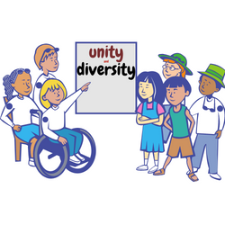

A designer is a human being first
Before anything you are a human. As a human you are part of a social contract and everyone shares the same planet. By being a designer you chose to impact people who come in contact with your work. You can help or hurt these people. Every human being is obligated to leave our planet a little bit better than it was found. When you do work that depends on hurting someone you have failed as a human being and a designer.
A designer is responsible for the work they put out
Design is a discipline of action. Whatever you put out into the world has your name on it. It is impossible to know how your work will be used, but if you create something hurtful it shouldn't be a shock when it does what it was designed to do. Is it suprising when a gun inevitably kills someone? No. The work you bring into the world is the legacy you leave behind.
A designer values impact over form
Designers need to learn to fear consequences of their work more than loving ideas. Society is the biggest thing that can be impacted. Anything you do will go into that system whether it is good or bad.
A designer owes client's their labor and counsel
When you get hired your job is to produce the work and evaluate the impact of the work you've created. Your job is to tell the client or your employer the impact. You have to judge the value of your work based on that impact, and get rid of the negative stuff. If you can't get rid of the negative it is your responsibility to make sure it is never seen. Design skills include saying no ans asking why.
A designer welcomes criticism

A designer should encourage criticism. Criticism will help you create better work in the future. The role of criticism is to evaluate and improve work. Criticism should be welcomed with open arms at every step of the design process. When you get feedback early and often you have higher chances of a successful design.
A designer strives to know thier audience

Design is an intentional solution to a problem with constraints. You need to meet with the people having these problems so you know if you are solving them correctly. A team with a single point of view will not understand constraints they need to design for. You need a team with different backgrounds and experiences to get to a solution.
A designer does not believe in edge cases
Eric Meyer says "When you call something an edge case, you're really just defining the limits of what you care about". When you call people edge cases you are marginalizing them. You are making a decision to say that those people don't matter to you and their problems aren't worth solving. People are NOT edge cases, they are humans who deserve our best work.
A designer is part of a professional community

A designer seeks to build a community not divide it. The way you handle yourself professionally affects everyone. If you are dishonest the designer behind you might end up paying for that. You should never throw another designer under the bus for your gain.
A designer welcomes a diverse and competitive field.
A designer should seek to learn. That means you might have to confront what you don't know, or listening to others experiences. A designer must keep their ego in check and know when to stop talking and when to listen. A designer must know their own biases and welcome having them checked and fight to make room for those who have been silenced.
A designer will take time to self reflect.
No one decides one day to throw their ethics out of the window. It happens overtime. It may happen over a few small decisions. That is why you need to take time to self reflect every few months. Look at the decisions you made recently and evaluate them. If you have veered off course then correct it immediately. Your job is a choice. Do it right.